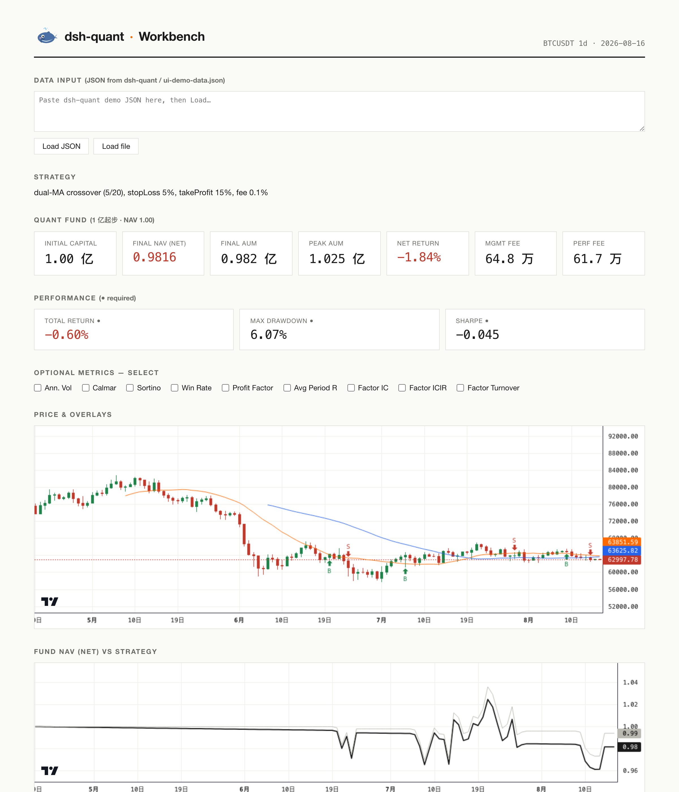

dsh-data PDAT
行情与数据质量。免费行情三市场：加密（binance/okx/bybit）、A股（sina/tencent 前复权）、美股/全球（yahoo）；13 渠道知识库；缺值/异常/跳变标注。
quant_market_fetch · quant_data_guide · quant_data_quality
DEEPQUANT HARNESS · PLUGIN FOR DEEPSEEK HARNESS
给 DeepSeek Harness 的 agent-native 量化研究工具箱： 取数、算指标、回测、风控、基金模拟，一条管线跑通 PDAT→PET。
方法与工具开源 · 数据与结论留在内部。欢迎 issue / PR / discussion。
域驱动目录结构，映射内部五团队（PDAT/PAAT/PCPT/PRT/PET）+ 开源侧独有生态域。
行情与数据质量。免费行情三市场：加密（binance/okx/bybit）、A股（sina/tencent 前复权）、美股/全球（yahoo）；13 渠道知识库；缺值/异常/跳变标注。
quant_market_fetch · quant_data_guide · quant_data_quality
指标与因子。12 技术指标、因子评价（IC/RankIC/IC衰减/分层/多空）、因子中性化、多因子合成。
quant_factor_evaluate · quant_factor_neutralize · quant_rsi
回测与建模。5 策略回测、线性模型（OLS/Ridge）、walk-forward 样本外验证、指标库；ML/DL 架构知识地图。
quant_backtest · quant_walk_forward · quant_linear_model
风控。VaR/CVaR/β/α/IR、回撤分析（峰/谷/恢复）、Kupiec 检验。
quant_risk · quant_drawdown · quant_var_backtest
交付与交易框架（无实盘）。执行模拟（滑点/延迟/费）、基金模拟（1亿起·净值1.00·高水位20%提成）、图表、研究报告。
quant_execute_sim · quant_fund · quant_report
开源生态域。GitHub/npm 生态数据 + 0-100 影响力评分——工具会给自己打分。
quant_repo_stats · quant_npm_stats · quant_oss_pulse
quant_research_pipeline：数据 → 质量 → 统计 → 指标 → 回测 → 指标库 → 风控 → 回撤 → 基金 → 因子 → 报告 → 图表。
多标的并行：每个标的交给一个 subagent 调 pipeline——天然并行、独立容错。
K 线 + 均线叠加 + 交易标记、资金曲线、基金净值/管理费/提成卡片、指标选择器。点标题 3 下出鲸鱼 🐋。

不提供生产策略，但提供方法与知识：ML/DL 架构地图（模型阶梯 · 样本外验证金标准 · 过拟合诊断 · RL 形式化）与可执行 demo（npx tsx demos/ml-workflow.ts）。
模块定位（置顶 issue） · 量化/数据插件生态地图 · awesome-dsh-plugin 收录 PR · 官方 Show Your Plugins